打个广告
伟大航路, 我把世界上的一切都放在了那里, 有种的话就去领取吧
这是OGRE中文网的一则广告, 无论作为OGRE的学习者还是漫漫人生的一名旅客, 这句话都是非常不错的激励语.
它是否能够让你隐约看到属于自己的新世界？
啥是OGRE
ORGE(Object-oriented Graphics Rendering Engine)是一款优秀的C++开源图形渲染引擎. OGRE主要提供渲染引擎, 但在系统API, 文件管理以及范例中都提供的非常丰富的接口和范例, 在设计模式上也有很多考究, 代码书写的也比较规范, 无论是作为使用还是学习, 都有着非常不错的价值.
正文
鉴于《游戏开发与设计》课程的需要，昨天开始开始折腾OGRE引擎. 关于游戏, 最初接触是大一是用的Python库Pygame, 简单易用到不行. 而ORGE相对于Unity, Cocos而言, 感觉已经末落了
官方提供的OGRE SDK并不支持VS2013及以上
所以我们要通过OGRE源码编译自己的SDK
Ogre Source 引擎源码
Ogre Dependencies编译源码所需的依赖库 包括OIS, CG, GUI以及SDL2
CMAKE 跨平台的自动化建构工具, 2.8最高只支持生成VS2012的sln
准备
工作路径: D:\Code\Ogre\
- 解压source和SDK至D:\Code\Ogre\
- 解压deps至SDK目录下, 并重命名文件夹为Dependencies
生成 Makefile
Dependencies
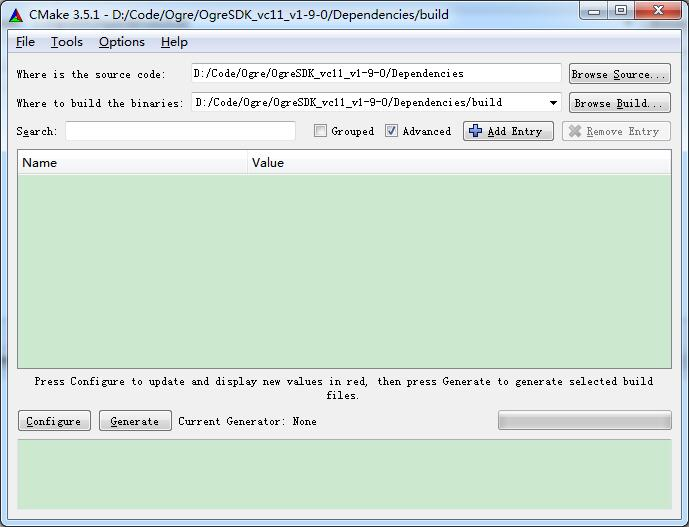
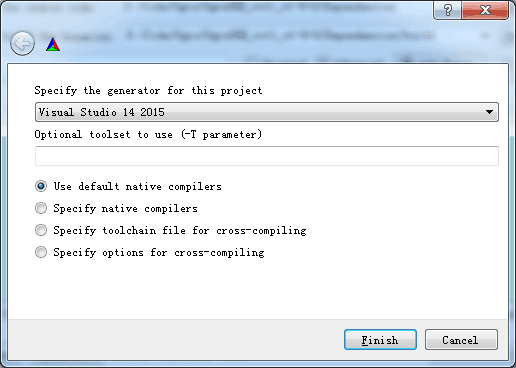
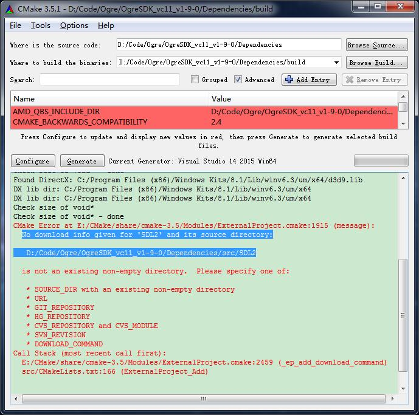
CMAKE报错, 发现缺少源码src/SDL2. 下载并解压到此目录
configure
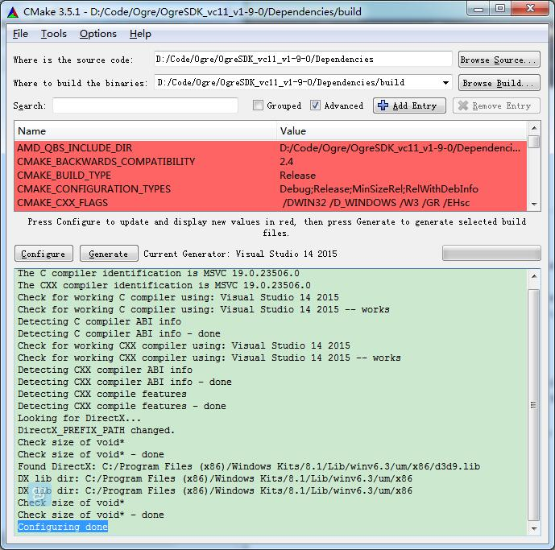
generate
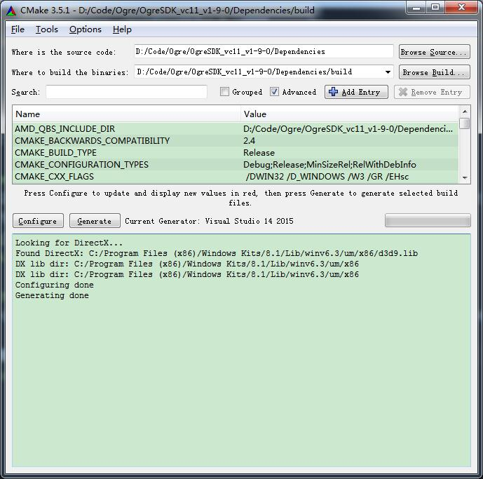
此时发现.\Dependencies\build下已经得到了所需的依赖库
编译
- 现在打开依赖库中的OGREDEPS.sln, 分别在Debug和Release模式下生成代码
包括FreeImage, freetype, OIS, zlib 和 zziplib.
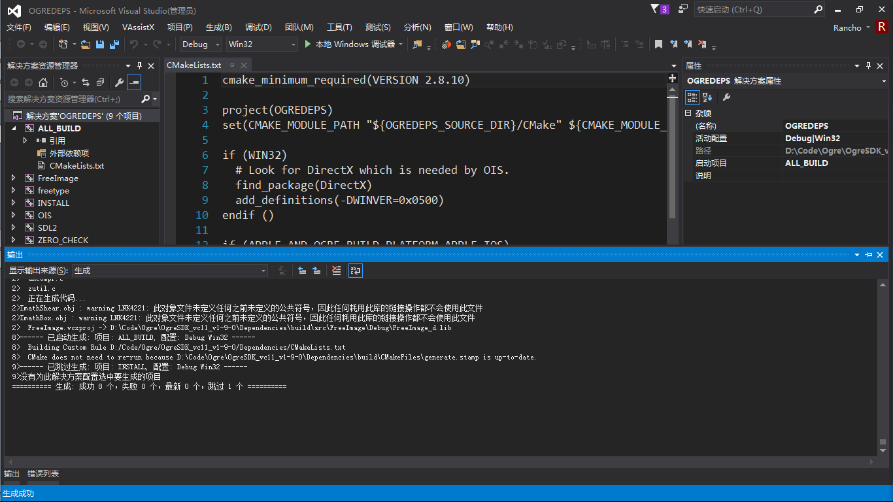
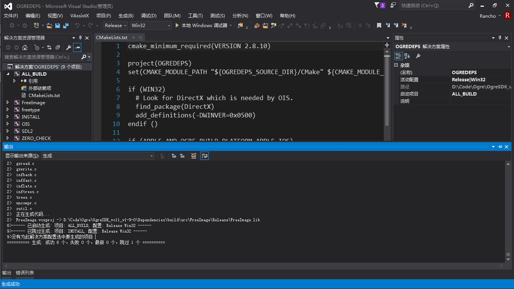
- 现在选择INSTALL项目, 并同样在Debug和Release下生成它. 此时会得到Ogre所需要的文件结构, .\OgreSDK_vc11_v1-9-0\Dependencies\build\ogredeps中
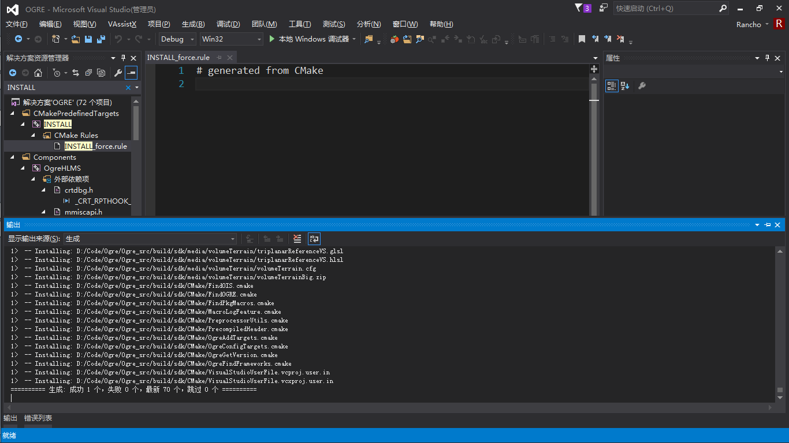
- 依赖库部分编译完成, 接下来开始编译引擎部分, 即.\Ogre_src
(注:QuickGuide把源码文件夹命名为OgreSDK, 可是刚才依赖库不就是在.\OgreSDK_vc11_v1-9-0里吗? 心塞)
好了, 又轮到CMAKE出场了, 同样选择Visual Studio 14 2015版本
这是发现又报错了, 发现缺少Boost(业界流行的”C++ STL”)
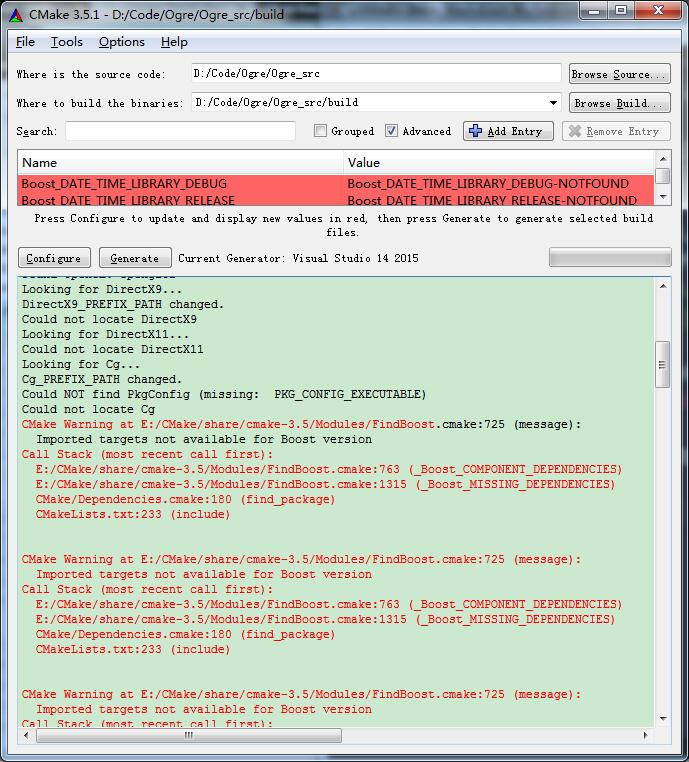
不过下载的同时发现需要更改configure
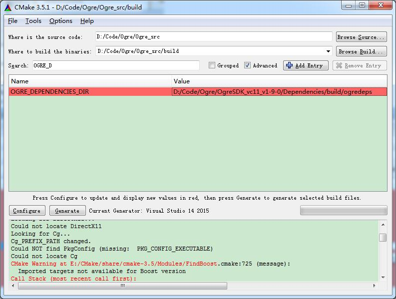
那我们还是先继续做吧, 反正Boost还没下完. 重新generate后虽然同样有报找不到Boost, 但还是Generating done了. 所以Boost还是先晾在一边好了
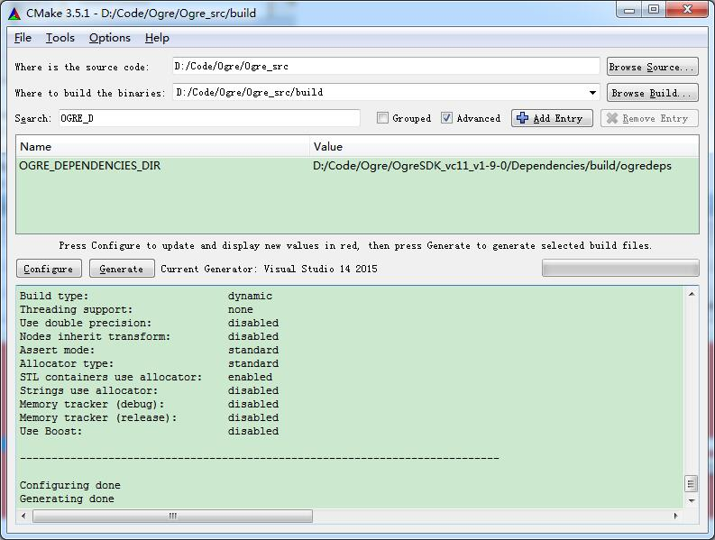
- 现在打开.\Ogre_src\build中的OGRE.sln, QuickGuide上虽然没说, 但保险起见同样生成两次吧. 反正程序员有大半辈子都在等编译结果对吧!(BTW, 泡面都吃完了进度条都还没到一半)
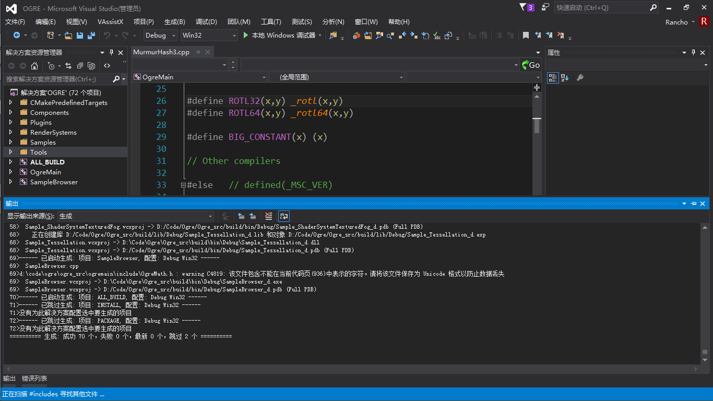
- 然后搜索并生成INSTALL